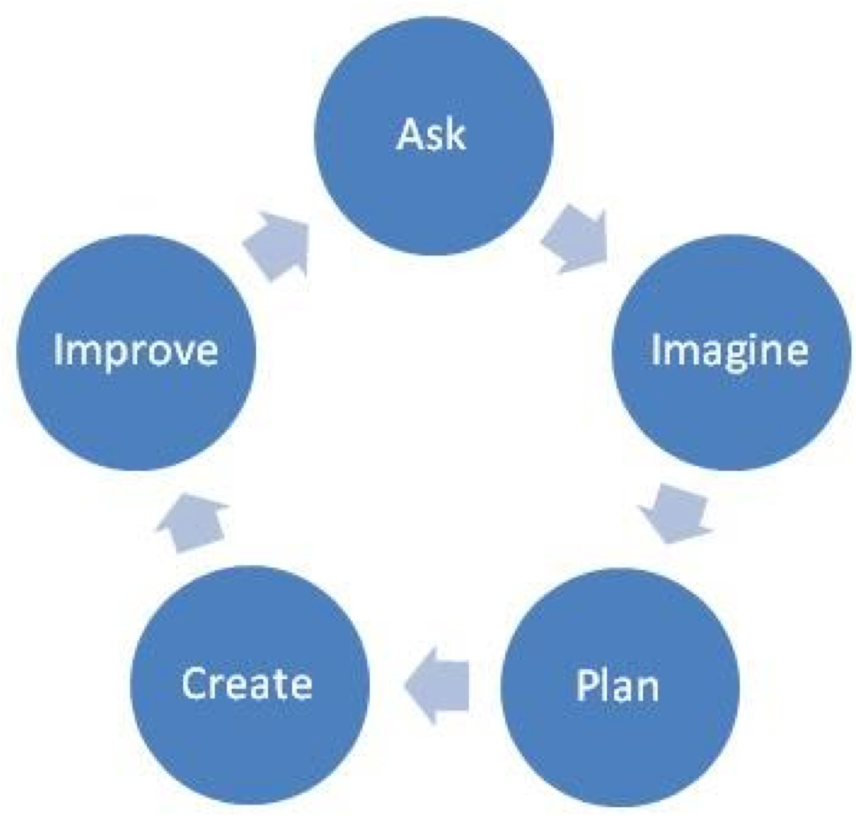
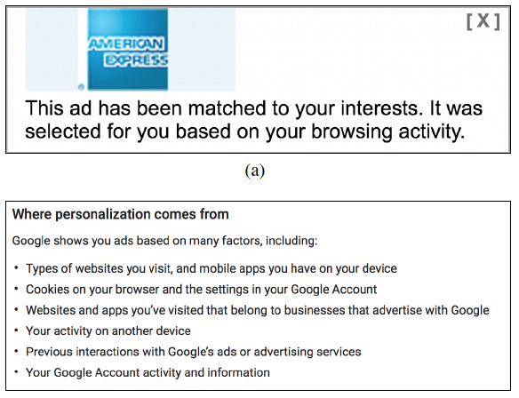
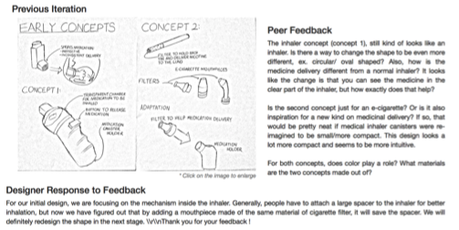

Sneha R. Krishna Kumaran (CV)
PhD Student
Computer Science
University of Illinois Urbana Champaign
srkrish2@illinois.edu


I am a 5th year PhD student at the University of Illinois at Urbana Champaign working with Prof. Brian Bailey in the ORCHID Research Group. My research interests include creativity tools and educational technologies.
My PhD research focuses on how technology can be used to encourage users to engage in positive behaviors (such as feedback-seeking behavior) and how to identify a lack of these behaviors in users. For example, each and every teacher and mentor tells their students to share their work earlier and more often to get feedback. However, students don't necessarily heed this advice, although they know it is in their best interests to do so. How can we encourage this feedback-seeking behavior?
My work uncovers that most content creators confide in a few trusted friends and colleagues before showing their supervisors or anyone else. My current work empirically studies how trust in a relationship affects how often and how early content creators seek feedback through online sources and how self-regulation strategies can be beneficial to content creators while sharing their work. In the future, I am interested in leveraging statuses and live streaming, which are already being incorporated into many communities including Facebook, Instagram, and Behance. These features may influence users to engage more actively in the communities (i.e. posting more content), but there is little empirical research on the social mechanisms at play and how they influence social ties. I plan to use a combination of data analysis and controlled experiments to determine how the different modalities of content influence user engagement on social media platforms.
Before coming to UIUC, I completed my BS in Computer Science from Oregon State University. There, I worked with Prof. Rebecca Hutchinson and Prof. Thomas Dietterich for my undergraduate senior thesis on identifying insect behavior in a diverse ecosystem.

Feedback is a staple of the design process, but little is known about why designers delay or refuse feedback collection. To fill this knowledge gap, my dissertation identifies triggers and deterrents to feedback seeking behaviors. Based on our findings, I propose and test two interventions to promote feedback seeking behavior: 1) helping designers plan when they seek feedback to increase commitment and 2) generating feedback templates based on design stage to reduce the effort of feedback seeking. We envision a future where creativity support and educational tools use our interventions to encourage designers to seek feedback earlier, more frequently, learn faster, and eventually create better designs.
Communicating Algorithmic Process in Online Behavioral Advertising
Motahhare Eslami, Sneha R. Krishna Kumaran, Christian Sandvig, and Karrie Karahalios
CHI 2019 Paper

Advertisers develop algorithms to select the most relevant advertisements for users. However, the opacity of these algorithms, along with their potential for violating user privacy, hasdecreased user trust and preference in behavioral advertising. To mitigate this, advertisers have started to communicate algorithmic processes in behavioral advertising. However, how revealing parts of the algorithmic process affects users’ perceptions towards ads and platforms is still an open question. To investigate this, we exposed 32 users to why an ad is shown to them, what advertising algorithms infer about them, and how advertisers use this information. Users preferred interpretable, non-creepy explanations about why an ad is presented, along with a recognizable link to their identity. We further found that exposing users to their algorithmically-derived attributes led to algorithm disillusionment—users found that advertising algorithms they thought were perfect were far from it. We propose design implications to effectively communicate information about advertising algorithms.
Increasing Quality and Involvement in Online Peer Feedback Exchange
Sneha R. Krishna Kumaran, Deana McDonagh, Brian P. Bailey
CSCW 2018--Online First (27%) Paper

Instructors are integrating the use of online peer review platforms to keep pace with growing class sizes. However, these platforms typically prioritize random peer assignment and only show the current solution. These choices can result in low quality feedback in project-based design courses. We report on an experiment in which students (N=59) worked on twelve-week product design projects and both wrote and received online feedback at four stages. The experiment tested a novel concept of peer mentorship,where peers were assigned to give feedback to all stages of one project, and tested showing feedback context from the preceding design stage when composing feedback. The results showed that displaying context from the preceding design stage led to feedback with higher perceived quality at certain stages of the design process and feedback from mentors promotes more response from the feedback receiver. Our work contributes deeper empirical understanding of how assignment strategies and showing additional context affects peer feedback and provides practical guidelines for instructors to implement these methods in design courses.
Identifying a ranking of plant preferences for a pollinator
Sneha R. Krishna Kumaran, Thomas Dietterich, Rebecca Hutchinson
Undergraduate Research Project Thesis
Pollinators are an integral part of agriculture and the ecosystem. However, due to changing land use, populations of wild pollinators are decreasing and plant distributions are changing all around the world. To understand how plant-pollinator networks will adapt over time, we would like to understand how pollinators choose flowers to visit. We will model a pollinator’s interaction with plant species in two ways: first using a probabilistic multinomial approach to fit a preference score to each plant and second to explain our findings from the multinomial model using the traits of the flowers themselves. Our findings show that a model with preferences performs better than a model which does not have preferences. While this model shows potential in finding plant preferences, it does not fully explain the distribution of plant-pollinator interactions. To try to explain the interactions more fully, we incorporated the traits of the plants into the score of the plant. We found that the traits do have some effect on the score of the plant, but again do not fully explain the interactions in this particular model.
Dance Tutor
Personal Project (in progress)
My goal is to build a web-based tutoring system to provide immediate feedback to dancers without the need of an instructor. I plan to accomplish this by using an open-source pose-detection library (such as OpenPose) to detect the joints of a dancer. Then, using input from an expert dance instructor, I will create heuristics to provide corrections to the dancer to improve their form.
Future work will need to determine the most appropriate ways of providing feedback in this environment (visual feedback vs audio feedback for example). Future steps could also include exploring intelligent feedback based on the user's expertise in dance and the user's fitness level.
SAGE DesignBot
Class Project for Into to Human Computer Interaction (CS 565)
People often refer to various sources for receiving feedback on their designs including online platforms such as Facebook, Reddit, Behance, expert designers, friends, family, etc. One of our goals was to see if a bot designed to provide feedback would be able to overcome the limitations of those venues of feedback. To do this, we performed a wizard-of-OZ user study to determine the strengths and weaknesses of a potential design bot. Participants were more comfortable interacting with the bot compared to an online community. Participants also noted that they would prefer to get face-to-face feedback at certain stages of the design process. Our results suggest that a design bot will be an useful tool for novice designers who are looking to get feedback.